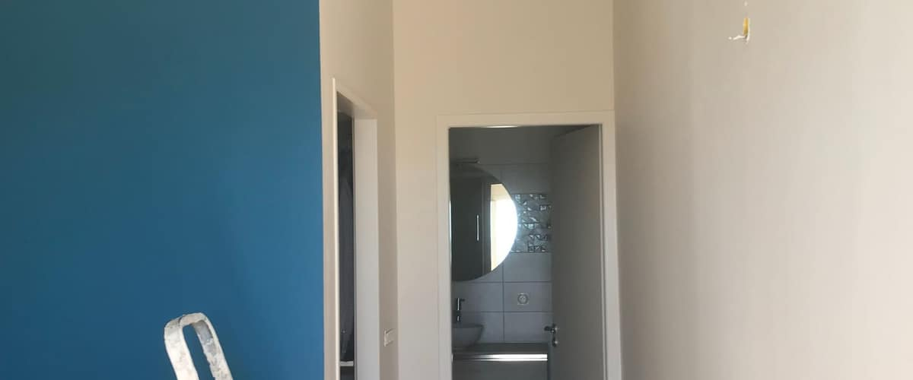

01
Murs, Plafonds, Portes & Radiateurs
Peinture Intérieure
Donnez vie et éclat à vos pièces : murs, plafonds, portes, boiseries et radiateurs. Nous protégeons intégralement vos sols et mobiliers, puis appliquons des peintures professionnelles à faible émission de COV (A+) pour un tendu impeccable, sans traces de reprise, en finition mate, veloutée ou satinée.
Murs, plafonds, portes, boiseries et radiateurs
Peintures professionnelles classées A+